Los elementos de la naturaleza se entrelazan en secuencias armoniosas. Se despliegan paso a paso, revelando conexiones profundas y significados ocultos.
Capturo la esencia de la naturaleza y creo experiencias visuales que conectan con lo salvaje y lo sereno.
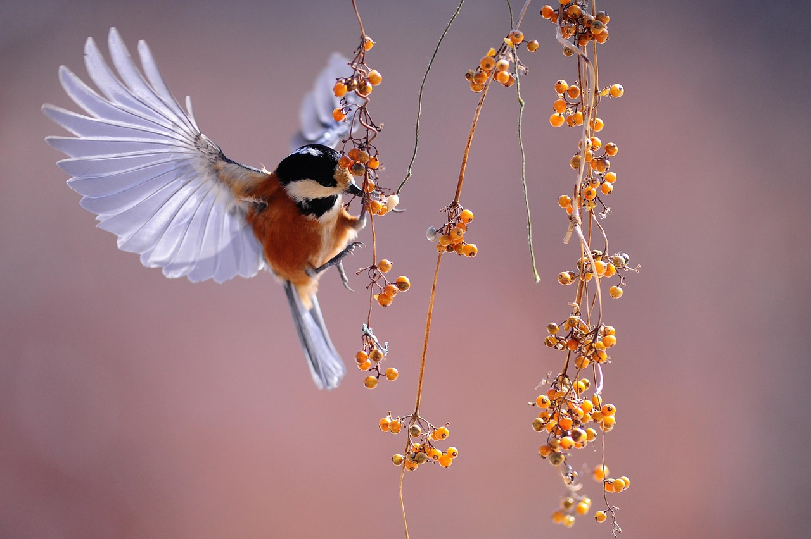
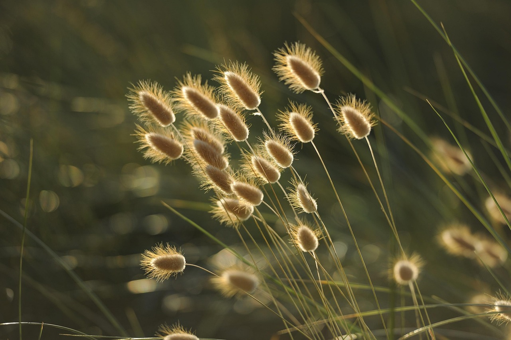

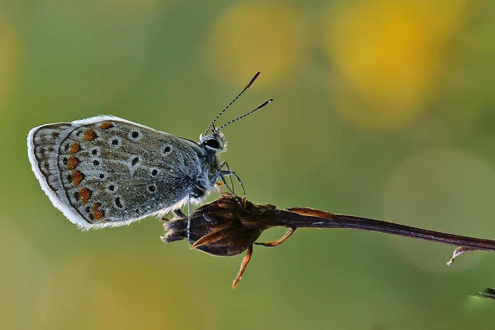
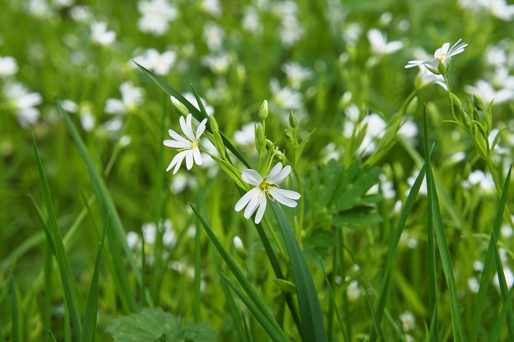
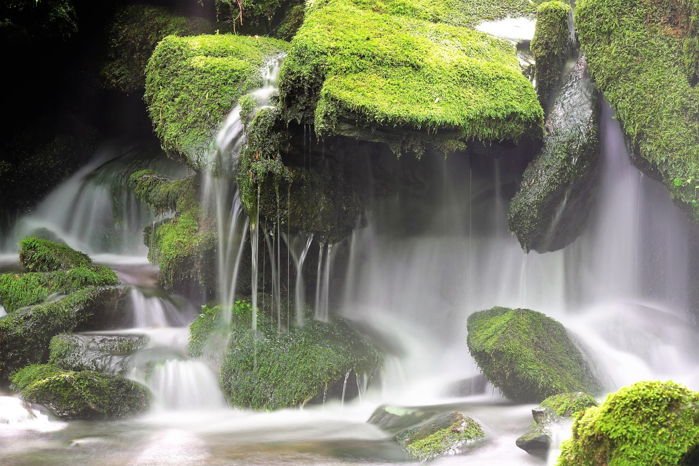
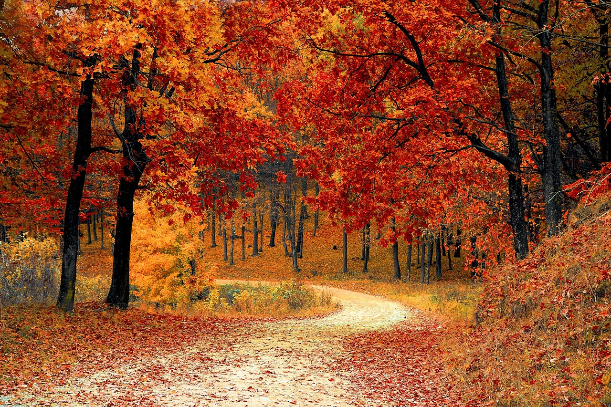
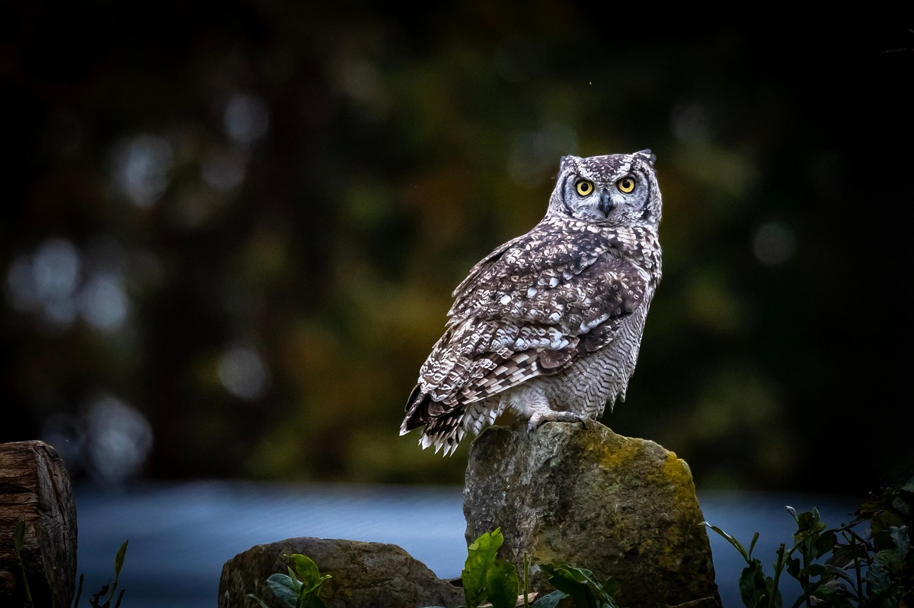
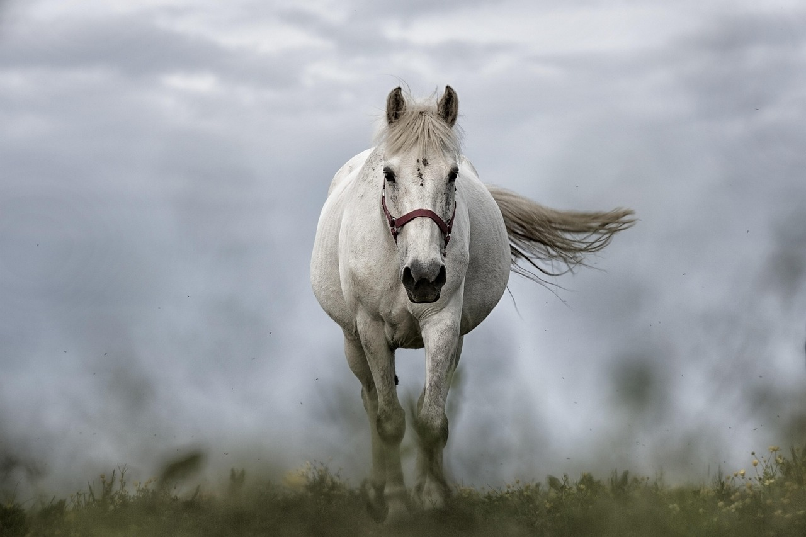
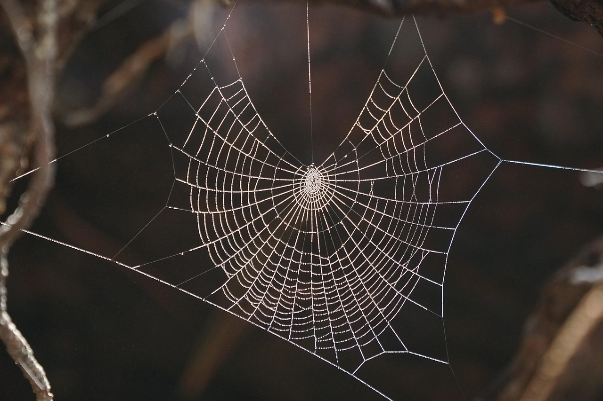
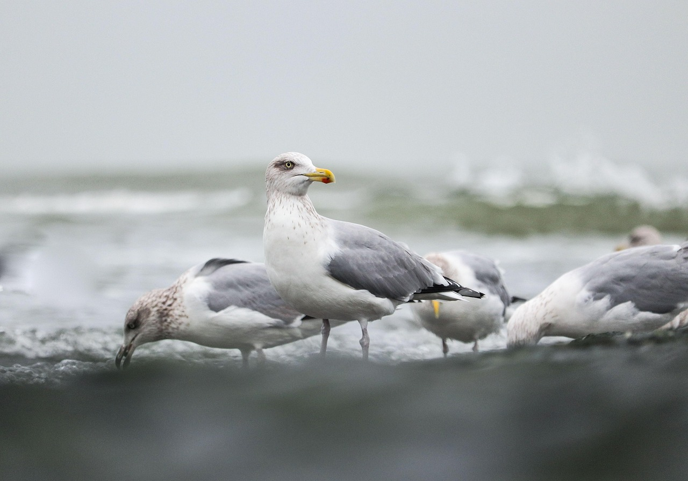
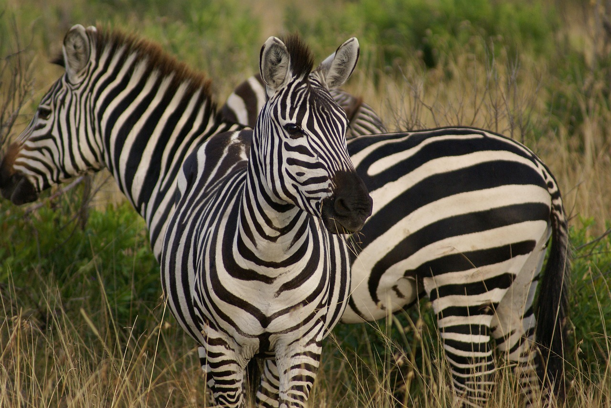